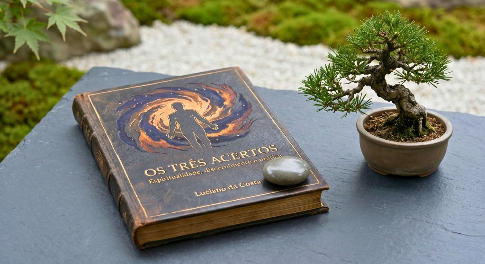

Um livro sobre espiritualidade consciente, prática responsável e discernimento na vida cotidiana.
"Os Três Acertos" é a transcrição organizada do curso do Professor Luciano da Costa. Uma visão estruturada, sem dogmatismos ou promessas vazias, para quem busca profundidade na jornada interior.

Para quem é este livro?
Uma leitura desenhada para indivíduos que cansaram do superficial e buscam respostas sinceras e aplicáveis sobre o desenvolvimento espiritual.
Buscadores Conscientes
Pessoas que buscam uma espiritualidade baseada na autêntica compreensão e no autoconhecimento, distanciando-se de modismos passageiros ou fórmulas mágicas de autoajuda.
Praticantes Maduros
Aqueles que compreendem que o verdadeiro progresso espiritual exige discernimento constante e vai muito além de rituais puramente superficiais ou dogmas tradicionais.
Estudantes Dedicados
Leitores que valorizam o estudo aprofundado, a lógica estruturada e a clareza didática aplicada a temas profundos e, muitas vezes, complexos da existência.
Os 4 Eixos Fundamentais do Livro
A estrutura de "Os Três Acertos" foi cuidadosamente organizada para guiar sua reflexão de forma progressiva e lógica.
Fundamentos da Espiritualidade
Desmistificação dos conceitos básicos sobre a consciência. O ponto de partida seguro e honesto para um entendimento interior livre de ilusões e puramente focado na realidade objetiva da alma.
Prática e Aprendizado
A integração do estudo à sua rotina pessoal de forma pragmática, sensata e disciplinada. A importância de viver honestamente e aplicar a teoria espiritual nos pequenos momentos cotidianos.
Transmissão e Discernimento
Um estudo essencial sobre os fluidos espirituais, a influência vibratória, as energias que nos cercam e o desenvolvimento de uma sólida autodefesa psíquica pautada no discernimento inteligente.
Responsabilidade Cotidiana
O verdadeiro teste da sua maturidade espiritual. Como canalizar a sabedoria adquirida na convivência familiar, no ambiente profissional, nos relacionamentos humanos e no cumprimento de seus deveres.
Leitura fluida, acessível e sem barreiras tecnológicas.
O livro é entregue em formato **PDF premium**, com design clean, diagramação sofisticada e fontes otimizadas para garantir conforto de leitura em qualquer dispositivo.
- Acesso imediato: receba em seu e-mail logo após a confirmação do pagamento.
- Multitela: perfeitamente otimizado para celulares, tablets e computadores.
- Sem restrições: faça o download do arquivo e guarde-o para sempre com você.

Sua leitura garantida e sem riscos
Acreditamos no valor e na profundidade deste material. Se por qualquer motivo você considerar que o conteúdo não agregou valor ao seu caminho, basta solicitar o reembolso integral em até 7 dias após a compra. Respeitamos seu tempo, seu investimento e sua inteligência.
Ainda tem dúvidas sobre o livro?
Fale diretamente com nossa equipe. Estamos aqui para ajudar você a entender se este material é o passo certo para o seu momento atual.
Perguntas Frequentes
Assim que o seu pagamento for processado (o que ocorre em poucos segundos em pagamentos via Pix ou Cartão), você receberá um e-mail contendo o link exclusivo para download do PDF.
Não. "Os Três Acertos" fundamenta-se em uma abordagem racional, madura e prática da espiritualidade consciente. Ele respeita a inteligência do leitor e suas crenças individuais, sem amarras sectárias ou proselitismo.
Sim. O material é disponibilizado em formato PDF de alta resolução e com diagramação otimizada. É compatível com qualquer celular, tablet, computador ou leitores digitais que ofereçam suporte à leitura de arquivos PDF.
O livro é uma transcrição inteiramente revisada e organizada didaticamente a partir das aulas ministradas pelo Professor Luciano da Costa, mantendo a profundidade original de sua transmissão oral, porém estruturada em eixos de leitura linear.